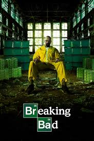

Breaking Bad is a fictional TV show directed by George Vincent Gilligan Jr. depicting the life of Walter White, a high school chemistry teacher. After Walter's diagnosis with lung cancer, he searches for ways to pay for his expensive treatment, ultimately resorting to the manufacturing of methamphetamine.
Important Characters: